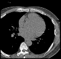
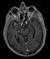

DWV is a simple javascript/HTML5 (only) DICOM Web Viewer.
Here are a few data example that are displayed as they could be on a web interface to a PACS system. Click on the list item to launch DWV with the selected data.
-

Baby MRI
Brain MR, 256*256*1, LittleEndianExplicit [1.2.840.10008.1.2.1]
The folowing items link to data available online but not in a secured way due to
the same origin policy.
To see them start Google Chrome with --disable-web-security
(do not forget to remove that flag for normal browsing).
-

Toutatix
Chest CT(A), 512*512*1, LittleEndianExplicit [1.2.840.10008.1.2.1], from the Osirix examples, hosted on my github.
-

Goudurix
Chest CT(A), 512*512*1, LittleEndianExplicit [1.2.840.10008.1.2.1], from the Osirix examples, hosted on my github.
-

US
US, 640*480*1, BigEndianExplicit [1.2.840.10008.1.2.2], from the GDCM examples, hosted on my github.
-

Cerebrix
Brain SC (Secondary Capture), 176*224*1, JPEG2000 [1.2.840.10008.1.2.4.91], from the Osirix examples, hosted on my github, NOT SUPPORTED YET....
Data sources: